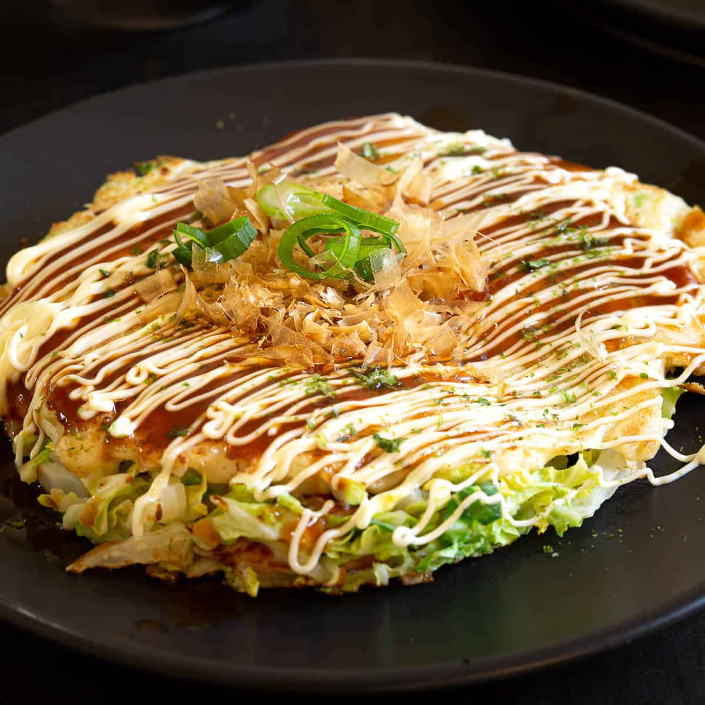

Okonomiyaki

Okonomiyaki is a Japanese savory pancake dish consisting of wheat flour batter and other ingredients cooked on a teppan. Common additions include cabbage, meat, and seafood, and toppings include okonomiyaki sauce, aonori, katsuobushi, Japanese mayonnaise, and pickled ginger
Ingredients
- 1/2 cup - Okonomiyaki Flour
- 1/2 cup - Water
- 2 Eggs
- 3 cups (10oz) - Shredded Cabbage
- 1/2 oz - Scallion (Finely Chopped)
- 3 slices - Pork Belly or Bacon
- 2 Tbsp - Oil
- Otafuka Okonomiyaki sauce
- Mayonnaise
- Bonito flakes
Steps
- Mix Okonomiyaki Flour, eggs and water in a bowl
- Add cabbage, scallion and mix again
- Heat griddle or skillet on medium heat and add oil
- Add half od the mixture onto the skillet and place 3 slices of prok belly or bacon on the top
- Cook 3 min, flip it over and cook another 4 min. After 4 min, flip once more
- Serve Okonomiyaki on a plate. Put Okonomiyaki sauce and Mayonnaise. Sprinkle scallion and Bonito flakes on it
Back